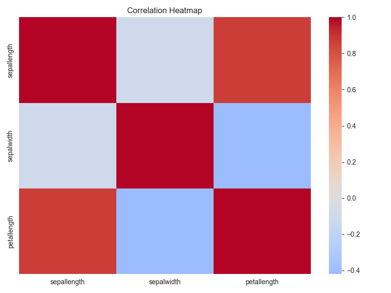
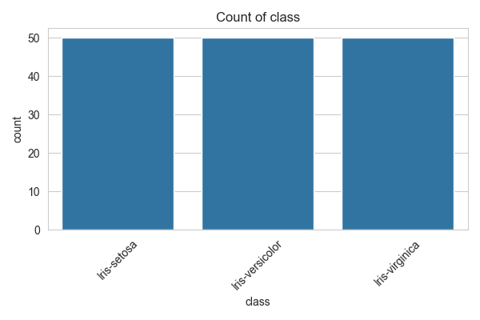
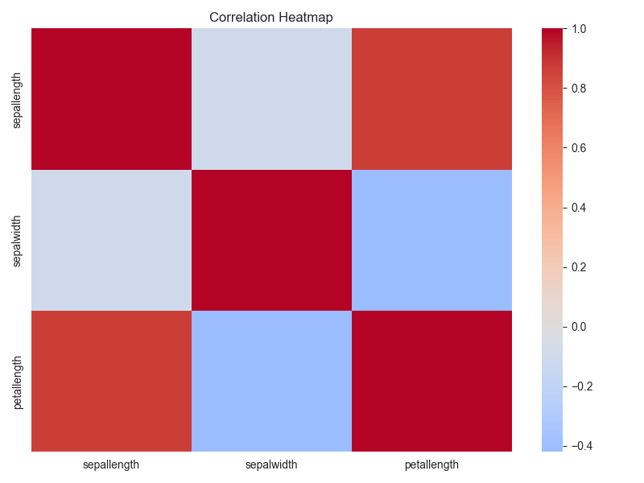
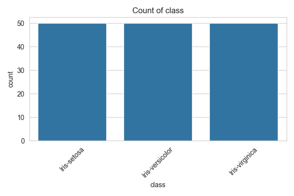
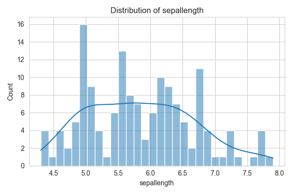
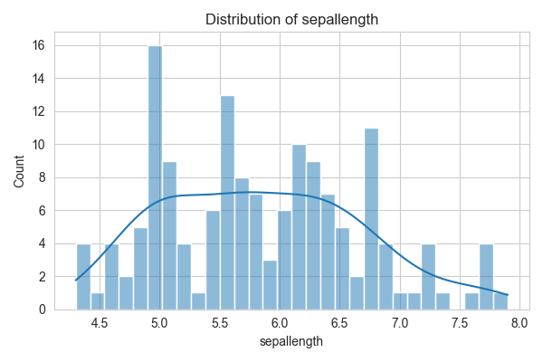
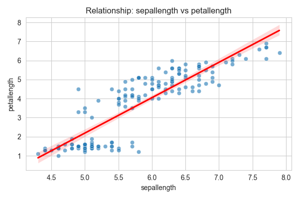
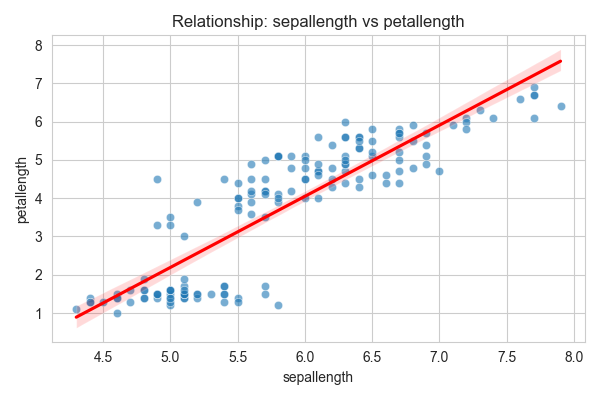
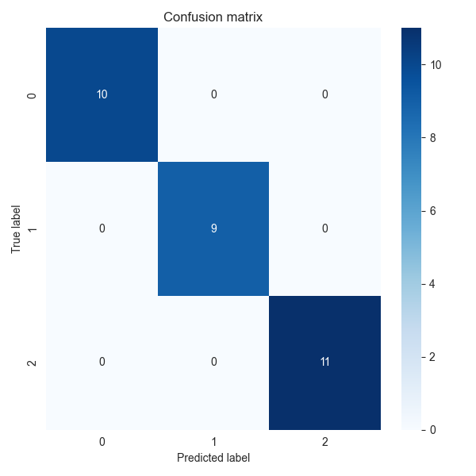
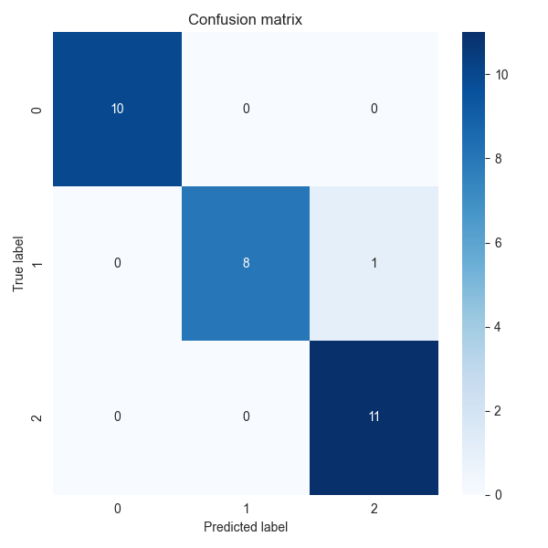

Universal Analyst Model Report
Date of Analysis: 2025-08-15 22:16:03
Dataset: iris
Step 1: Dataset Overview
- original_shape: (150, 5)
- final_shape: (150, 4)
- constant_columns_removed: []
- highly_correlated_columns_removed: ['petalwidth']
- columns_dropped_missing: []
- column_types: {'sepallength': 'numerical', 'sepalwidth': 'numerical', 'petallength': 'numerical', 'class': 'categorical'}
- pca_applied: False
Step 2: Exploratory Data Analysis (EDA)
Exploratory Data Analysis Report
Dataset Overview
- Number of rows: 150
- Number of columns: 4
Summary Statistics
Numerical Features
|
count |
mean |
median |
std |
min |
max |
skew |
kurtosis |
| sepallength |
150 |
5.84333 |
5.8 |
0.828066 |
4.3 |
7.9 |
0.311753 |
-0.573568 |
| sepalwidth |
150 |
3.054 |
3 |
0.433594 |
2 |
4.4 |
0.330703 |
0.241443 |
| petallength |
150 |
3.75867 |
4.35 |
1.76442 |
1 |
6.9 |
-0.271712 |
-1.39536 |
Categorical Features
|
unique_count |
mode_freq |
missing |
| class |
3 |
50 |
0 |
Key Insights
- Feature 'sepalwidth' has 4 potential outliers.
- Features 'sepallength' and 'petallength' have strong correlation: 0.87
- Features with high variance: petallength
Visualizations
 



 

 

Step 3: Insight Extraction
Data Insight Report
Dataset Summary
- Number of rows: 150
- Number of columns: 4
- Target column: class
- Problem type: classification
Top Influential Features
- petallength: Mutual Information Score = 0.9909
- sepallength: Mutual Information Score = 0.4636
- sepalwidth: Mutual Information Score = 0.2262
Summary Statistics of Top Features
- petallength: Mean = 3.7587, Median = 4.3500, Std = 1.7644
- sepallength: Mean = 5.8433, Median = 5.8000, Std = 0.8281
- sepalwidth: Mean = 3.0540, Median = 3.0000, Std = 0.4336
Outlier Counts per Numeric Feature
- sepallength: 0 outliers detected
- sepalwidth: 4 outliers detected
- petallength: 0 outliers detected
Next Steps
- Consider building predictive models using the identified influential features.
Step 4: Modeling and Prediction
Model Evaluation Report
Problem type: classification
LogisticRegression
- accuracy: 1.0000
- precision: 1.0000
- recall: 1.0000
- f1_score: 1.0000

RandomForestClassifier
- accuracy: 0.9667
- precision: 0.9694
- recall: 0.9667
- f1_score: 0.9664


SVC
- accuracy: 1.0000
- precision: 1.0000
- recall: 1.0000
- f1_score: 1.0000

Conclusion
This report summarizes the data ingestion, preprocessing, exploratory analysis, insights, and modeling results.
Further analysis and model tuning may be required based on business needs.